Lab Practice #2
Learning Objectives
In this lab exercise, you will learn the following:
- Create a custom Address Locator
- Geocoding
- Layer Symbology
- Spatial Join
Data required:
Lab2data.gdbOffences_BusStop.csvOffences_POB.csvOffences_LampPost.csv
Case Study
Read the following case study below.

Active Mobility Enforcement Officers (AMEO) from TRO (Traffic & Road Operations) have approached you to assistance to geotag their offence data onto a map. While they have recorded the location of the offence when issuing a ticket on the ground, this location is recorded in a textual format and have to be converted into latitude-longitude coordinates before they can be added to a map. This process is known as geocoding.
What is geocoding?
Geocoding is the process of transforming a description of a location—such as a pair of coordinates, an address, or a name of a place—to a location on the earth's surface. You can geocode by entering one location description at a time or by providing many of them at once in a table. The resulting locations are output as geographic features with attributes, which can be used for mapping or spatial analysis.
For more information on geocoding, check out the documentation.
2.1 Create a new project
-
Create a new ArcGIS Pro project titled
Lab2. Create a new map and add the Ignite Colour Basemap.Tip
Refer to Lab 1 if you need detailed instructions for this step.
-
In the Contents Pane, right click Folders > Add Folder Connection. 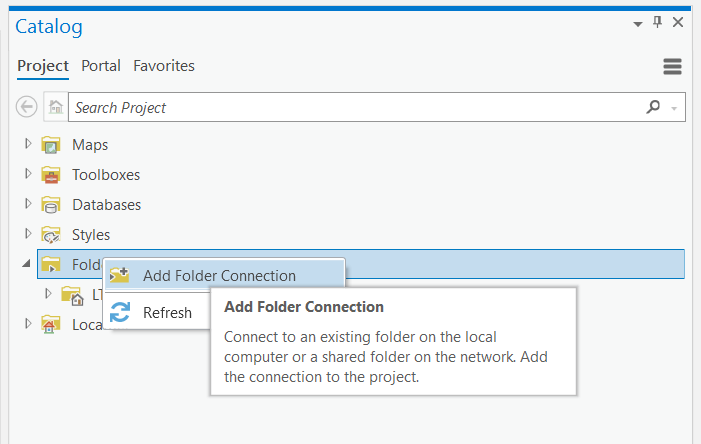
-
Click on This PC on the left and your
C:\drive at the right. Click OK. 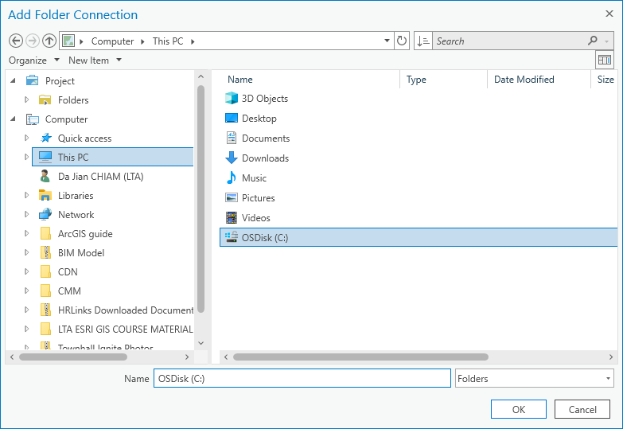
2.2 Creating an Address Locator
-
Navigate to Lab 2's data folder. Right click the
BusStoppoint feature class and click on Open Table.The Attribute Table for
BusStopopens. -
Create a Text field called
Country. - Right click your newly created
Countryfield and click on Field Calculator. -
Under the Country = text field, enter
'SGP'(with quotes). Click OK.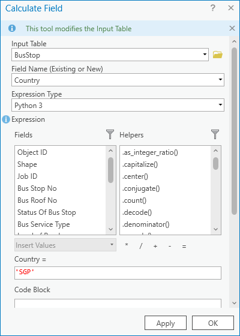
Your
BusStopattribute table should look like this: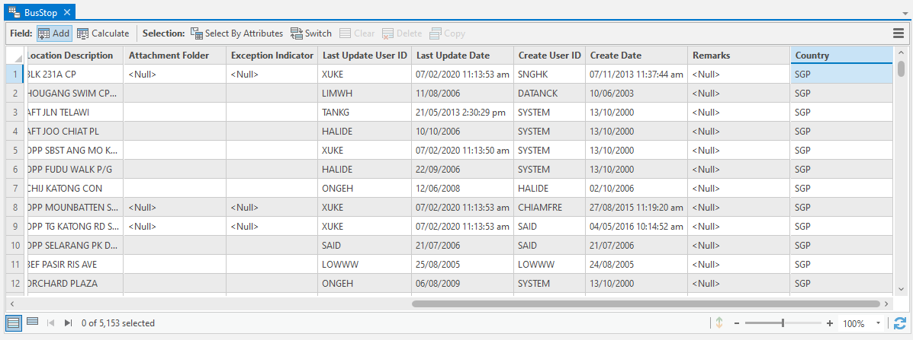
-
Under the Analysis Tab and Geoprocessing Group, click on Tools. The Geoprocessing panel appears at the right.
-
Enter
Create Locatorin the Find Tool text field.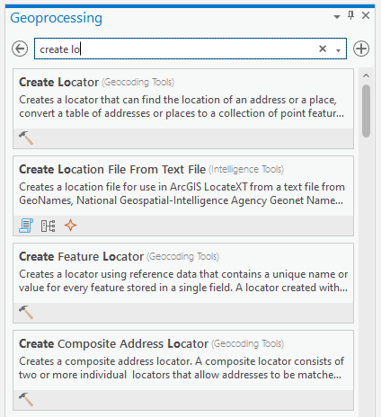
-
Click on the Create Locator (Geocoding Tools) tool.
-
Enter the following inputs:
- Country or Region: '
' -
Primary Tables: Browse to the
BusStopfeature class.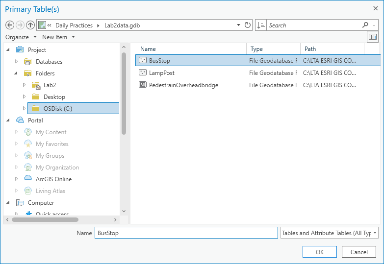
-
Role:
POI - Field Mapping: Select
Bus Stop Nofor Place Name andCountryfor Country Code. Leave all other fields asNone. -
Language Code:
English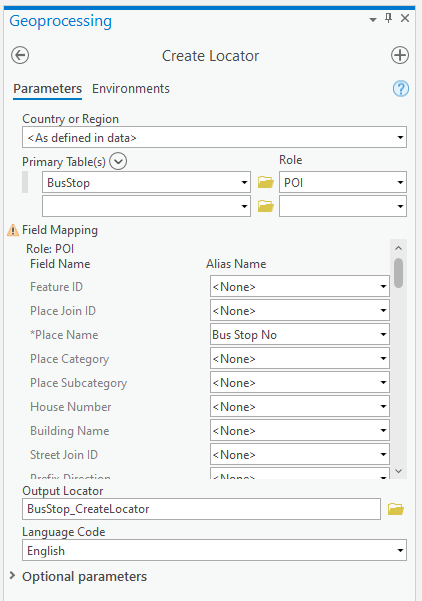
- Country or Region: '
-
Click OK to create the address locator.
Your new address locator is created in your project directory. It will have a
.locfile extension.
2.3 Geocoding AMEO feedback cases
- Add the
offences_busstop.csvonto your map by dragging it from the Catalog Pane on the right to the Contents Pane on the left. -
Right click the tabular layer and click on Geocode Table.
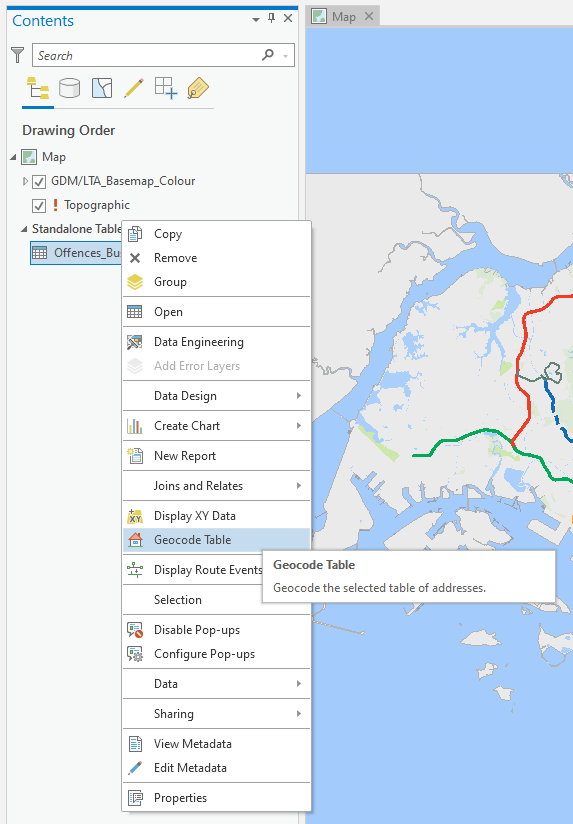
The GeoCode Table wizard appears.
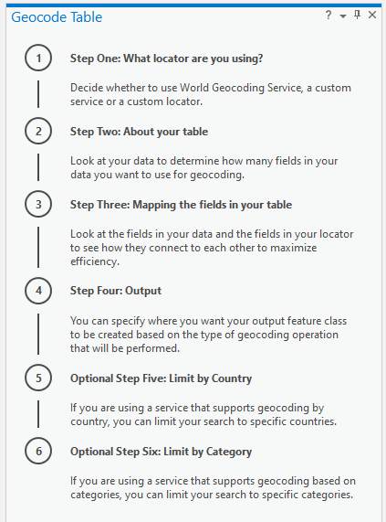
Tip
This wizard will only open the first time you launch ArcGIS Pro.
Important note on data structure
If there are padded zeros (e.g. 04504), the zero in front will be removed when importing into ArcGIS Pro (i.e. 04504 will become 4504). You must duplicate the field containing the padded zeros to a new text field and add the padded zeros back.
-
Follow the steps provided by the wizard.
- Save your output feature class as
Offences_BusStop_geocodedinLab2.gdbin your project directory. - Under Optional parameters, for Output Fields select Location Only.
Your final result should look like the following:
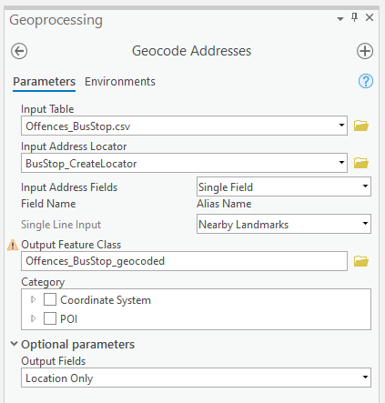
- Save your output feature class as
-
Click Run to execute the geocoding process. When completed, you should see the offences automatically added on the map.
2.4 Spatial Join
AMEO staff are also interested to know the nearest Town Council for each offence.
In this step, you will add a NearestTownCouncil field to the Offences_BusStop_geocoded feature class and populate it with the name of its nearest Town Council.
-
Add the
TOWN_COUNCIL_BDY_2020layer to your map. -
Right click the layer in the Contents pane and click Symbology. Click on the hamburger menu at the top right and click Import symbology...
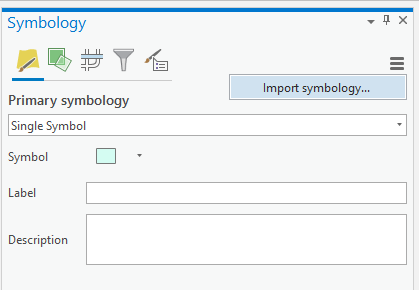
The Apply Symbology from Layer geoprocessing tool opens.
-
Under Symbology Layer, browse to
Town_Council_Bdy_2020.lyrfile and click on Run. Your map should look like this: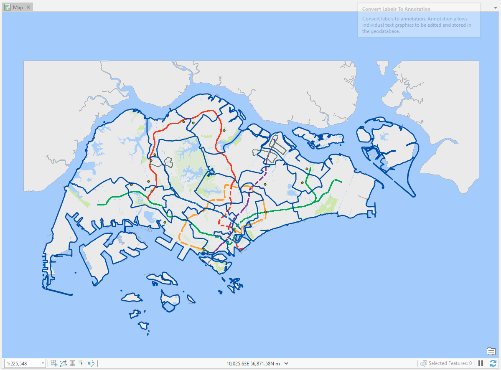
-
In the Contents pane, right click the
Offences_BusStop_geocodedlayer. Click on Joins and Relates > Spatial Join.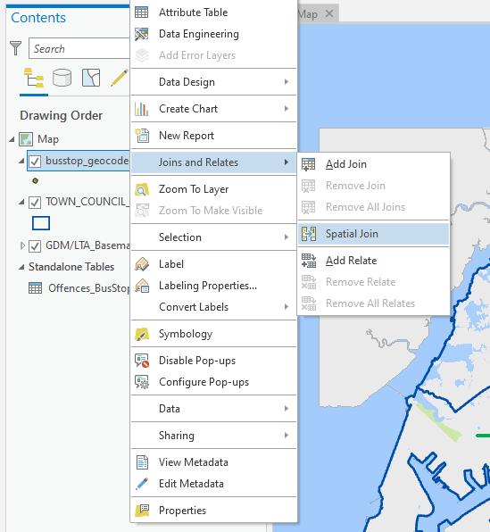
The Spatial Join geoprocessing tool opens.
-
In the Spatial Join, select the following:
- Target Features:
Offences_BusStop_geocoded - Join Features:
TOWN_COUNCIL_BDY_2020 - Output Feature Class:
Offences_BusStop_TC - Join Operation:
Join one to one - Match option:
Intersect - Fields: Expand fields and leave only the fields shown below (delete all other fields).
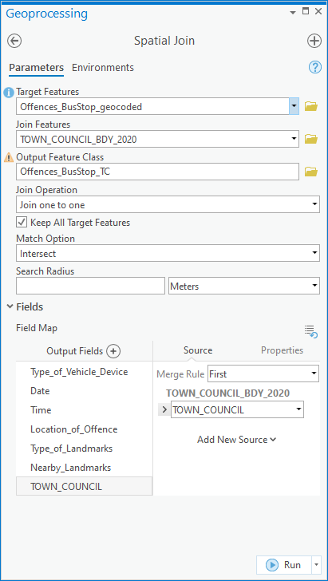
- Target Features:
-
A new feature class
Offences_BusStop_TCis created in your project directory. Open the Attribute Table to take a look at the data. Notice that each offence now contains a columnTOWN_COUNCILstating the town council boundary the offence occured in.
2.5 Exporting data
In this step, you will export the dataset created into an Excel file that can be submitted to AMEO colleagues.
-
Open the Geoprocessing pane and search for Table to Excel. Open the Table to Excel (Conversion Tools) tool.
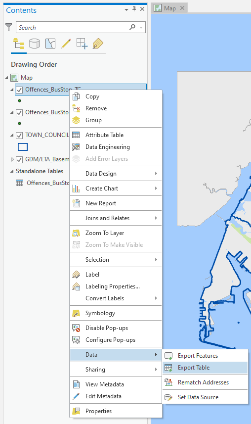
-
Select
Offences_BusStop_TCas the Input Table and browse for a directory to save the output file.
2.6 Geocoding offences tagged to POBs
-
Now using the POB layers, repeat Steps 2.2-2.5 using
Offences_POB.csv. -
Use the Append (Data Management Tools) geoprocessing tool to merge the
Offences_BusStop_TCandOffences_POB_TCfeature classes into a singleOffences_TCfeature class.
2.7 Map Symbology
-
Identify and assign an appropriate symbology to visualise
Offences_TC.Hint
Which field would be the best represented using Unique value symbology?
Stretch goals
-
Now using the
LampPostfeature class, repeat Steps 2.2-2.3 to geocode the offences with locations tagged at lamp posts inOffences_LP.csv.Hint
As the same Lamp Post No. could be duplicated across different roads, you will need to create a field that contains both the Road Name and the Lamp Post Number in the
LampPostfeature class andOffences_LP.csvbefore creating the Address Locator. -
With more offences captured every month, your AMEO colleagues have requested you to create a workflow that can repeat these steps on a monthly basis.
Given a CSV file containing either a Bus Stop or a POB, create a model in ModelBuilder that will export a .csv file containing the nearest town council.
Hint
You may want to plan and sketch out a flow chart to visualise the workflow before building the model.